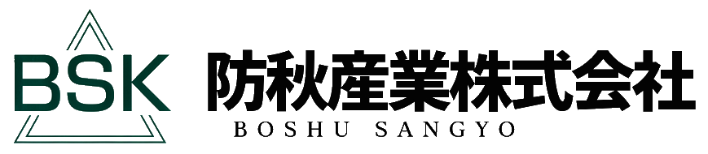
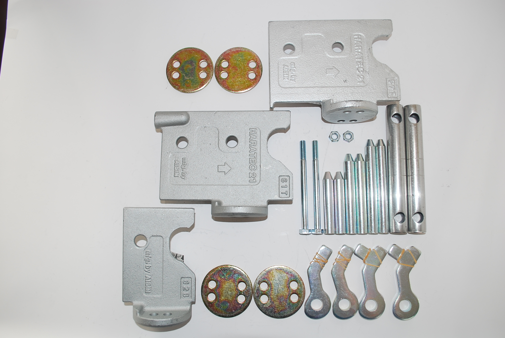
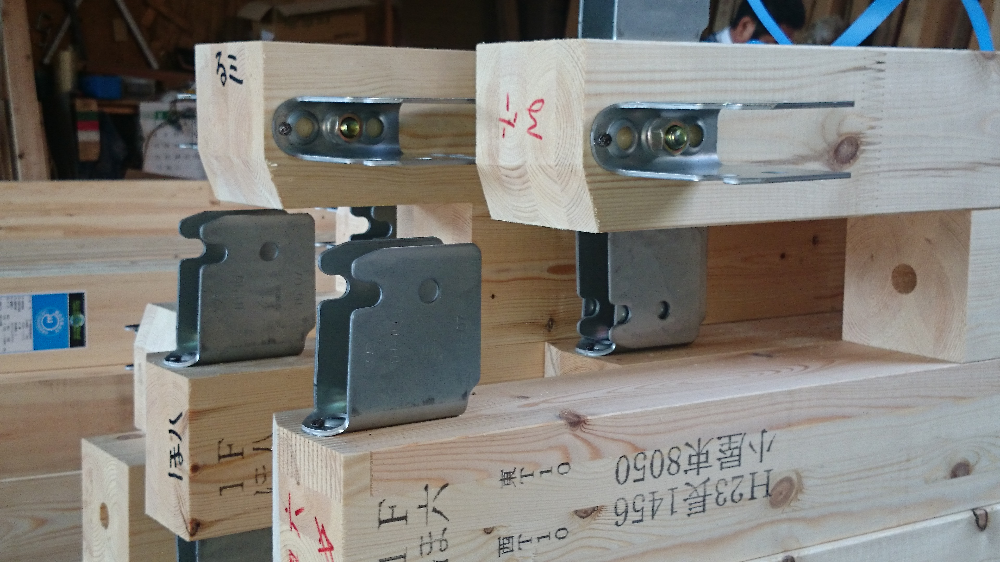

メタル
伝統と
スピード

metalwork
金物工法は、伝統的な木造建築で見られる仕口や継手を、 金属製の部品に置き換えることにより、各接合点が強化され、 耐震性や安全性が向上します。 在来工法で必要とされる羽子板ボルトが不要になるなど、 施工の手間や時間が大幅に削減されるます。

HYBRID
木材の断面欠損も少ないことから安定と高強度な構造体にすることができます。 プレカットした木材と専用金物の使用により、少人数でも効率的に組み立てられ 工期の大幅な短縮が可能です。より安全でスピーディな施工が 金物工法により生産性の向上が可能になります。